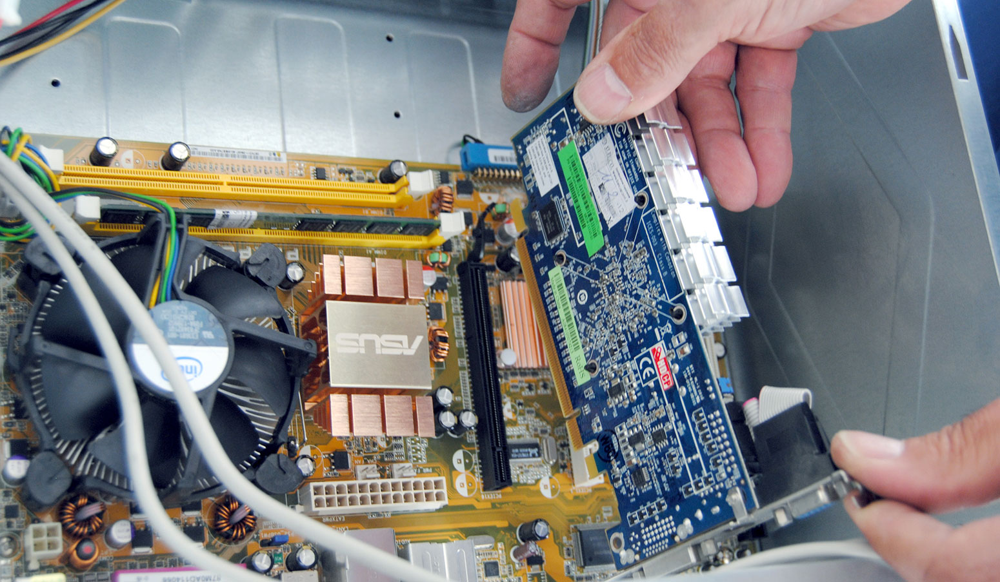
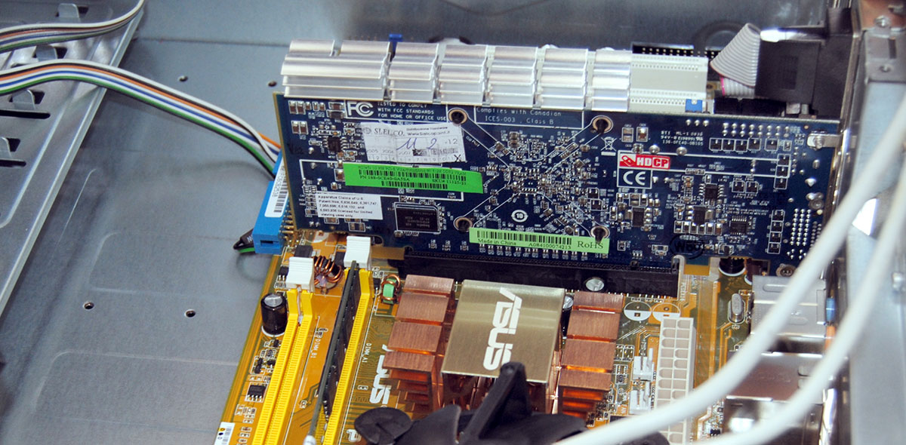

Periferiche
Periferiche esterne. Le periferiche esterne sono situate all'esterno del case del computer. Sono collegate all'unità centrale del computer tramite cavo o via wireless. Un esempio di periferica esterna è la stampante, lo scanner,
piazzare schede grafiche, di rete, audio ecc... nella posizione prestabilita e fissarlo al case
 (clicca qui per vedere i prezzi)